告警模块介绍
告警模块按照规则对收集的信息进行监控，并在规则被触发时通知相应的联系人。
能否有效的使用告警模块直接影响着监控的质量。通过对监控规则、告警策略、默认联系人等元素进行合理的配置，告警模块能够更快、更准确、更灵活的发现线上故障，并更有效的通知对应联系人。
本页内容
- 监控规则配置
- 告警策略
- 默认联系人配置
本页面对告警模块的通用概念进行介绍。如需了解某一个具体的告警类型，请阅读完本页的通用概念后再阅读对应的标签页。
1. 监控规则配置
合理、灵活的监控规则可以帮助更快、更精确的发现业务线上故障。目前Cat的监控规则有五个要素，请按照以下五点要素制定规则：
a).时间段。同一项业务指标在每天不同的时段可能有不同的趋势。设定该项，可让Cat在每天不同的时间段执行不同的监控规则。
b).规则组合。在一个时间段中，可能指标触发了多个监控规则中的一个规则就要发出警报，也有可能指标要同时触发了多个监控规则才需要发出警报。这种关系好比电路图中的并联和串联。规则的组合合理有助于提高监控的准确度。
c).监控规则类型。通过以下八种类型对指标进行监控：下降百分比、下降数值、上升百分比、上升数值、最大值、最小值、波动百分比最大值、波动百分比最小值。
d).持续时间。设定时间后（单位为分钟），当指标在设定的时间长度内连续触发了监控规则，才会发出警报。
e).规则与被监控指标的匹配。监控规则可以按照名称、正则表达式与监控的对象（指标）进行匹配。
监控规则模型如下图所示：
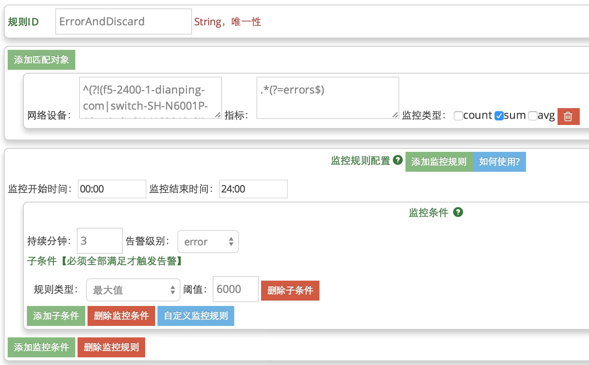具体解释如下：
1).一个rule元素为规则的基本单位，由唯一的id标示
2).rule元素由两个部分组成：监控对象与监控规则
a.监控对象：由metric－item元素匹配，与图中的匹配对象相对应。匹配对象是两级的，每一级都支持正则匹配
b.监控条件配置：由config元素组成，与图中监控规则相对应。每个config代表一个时间段的规则，由starttime和endtime两个属性确定。时间的配置格式为：“hh:mm”，请注意hh为24小时制。
config元素由多个监控条件组成，条件由condition元素表示。一个config下的多个condition为并联关系，当一个condition被触发，conditon所在的整个rule就被触发。
condition元素中的minute属性表示该条件的持续时间。设定时间单位为分钟。当指标在设定的时间长度内连续触发了该条规则，才会触发该condition。
condition由subcondition组成。subcondition与图中的子条件相对应。一个condition下的多个subcondition为串联关系，只有当一个condition下的全部subcondition被触发，该condition才被触发。
subcondition有八种类型，由type属性指定。subcondition的内容为对应的阈值，请注意阈值只能由数字组成，当阈值表达百分比时，不能在最后加上百分号。八种类型如下：
| 类型 | 说明 |
|---|---|
| DescPer | 下降百分比 |
| DescVal | 下降数值 |
| AscPer | 上升百分比 |
| AscVal | 上升数值 |
| MaxVal | 最大值 |
| MinVal | 最小值 |
| FluAscPer | 波动百分比最大值。即当前分钟值比监控周期内其它分钟值的增加百分比都大于设定的百分比时触发警报 |
| FluDescPer | 波动百分比最小值。即当前分钟值比监控周期内其它分钟值的减少百分比都大于设定的百分比时触发警报 |
| SumMaxVal | 总和最大值，请与告警分钟总和考虑 |
| SumMinVal | 总和最小值，请与告警分钟总和考虑 |
点击"如何使用?"按钮，将会出现信息介绍设置规则的流程
2. 告警策略
为了将告警信息更有效的发送给对应联系人，请考虑以下五个要素制定告警策略：
a).告警类型。Cat将告警分为六种类型：业务告警(项目指标的监控)、网络告警(网络设备监控)、系统告警(服务器状态监控)、异常告警(Exception数量监控)、第三方监控(对给定的网址，根据HTTP请求的返回码监控)、前端监控。由于告警策略是按照类型划分的，制定告警策略前首先请确定目前采用的是哪种类型的监控。
b).告警级别。告警级别即为该告警的优先级。不同级别的告警在通知渠道、暂停告警时间上可以有所差别。对告警进行合理的分级能够帮助我们将更多的精力放在更重要的问题上。
c).告警渠道。目前有三种告警渠道：邮件、微信、短信。
d).暂停告警时间。设定暂停告警时间(suspendMinute)后，某一指标在一次告警之后的指定时间段内不会再次发送告警信息。
e).恢复通知。设定恢复通知时间(recoverMinute)后，当一个指标在某一分钟告警并且在以后的指定时间段内没有再次告警时，Cat会发出恢复通知，表明该指标在这个时间段的状态是正常的。默认的恢复通知时间段为一分钟。
告警策略模型如下图所示：
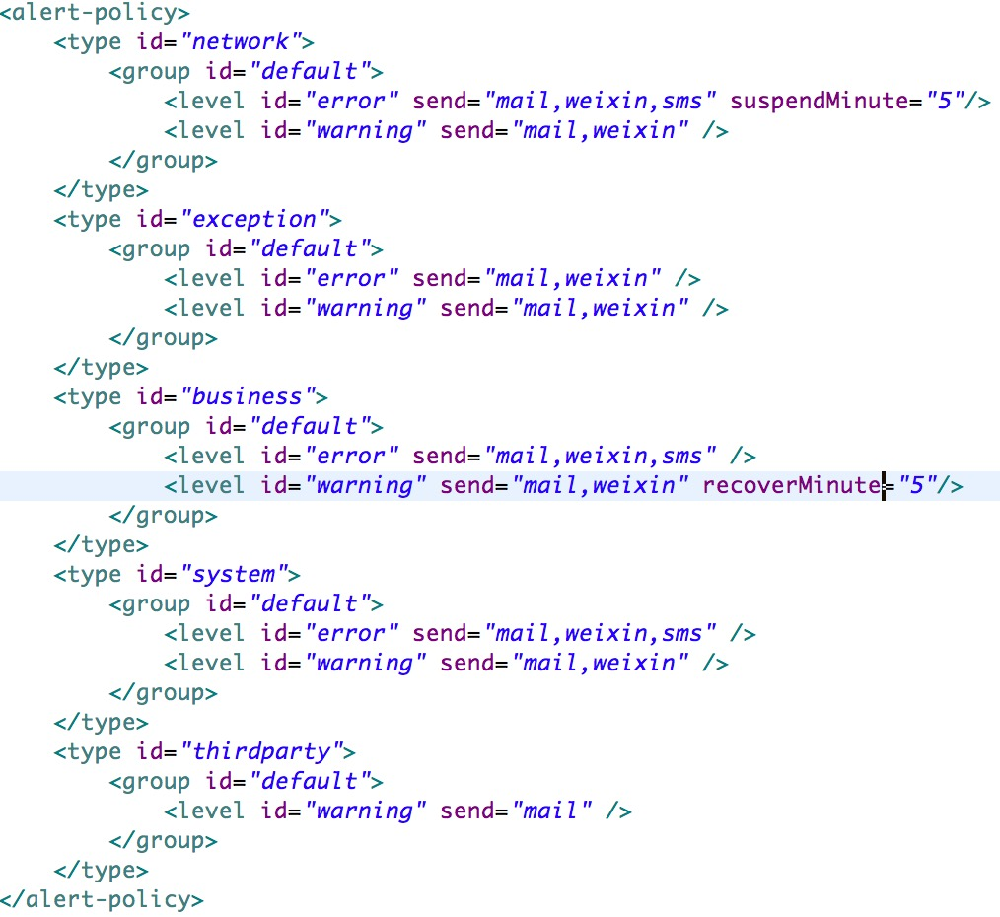具体解释如下：
1).alert-policy元素对应着Cat上的全部告警策略信息。每个type元素对应着一种告警类型，由id可以得知type与告警类型的对应关系
2).type元素下每一个group元素对应着一个项目或是一个产品线的告警策略。对于异常监控以及第三方监控，此处的group请填写项目名；其它类型请填写产品线名
当group元素的id为default时，该group元素即为该告警类型的默认告警策略。当没有其它group命中时，会采用默认告警策略。
2).group元素下的level元素对应着告警级别。level元素与监控规则中的alertType属性是对应的，请两者配合使用。level元素有两个属性
send属性。该属性对应着发送渠道，发送渠道之间用逗号分割
suspendMinute属性。该属性为暂停告警时间，单位为分钟
配置方法
1).点击导航栏Config－－监控告警配置－－告警类型设置
2).编辑文本框的内容，点击提交
3).当出现"操作成功"提示时表明策略已经生效
3. 默认联系人设置
此处仅建议Cat开发者使用。主要有以下两个功能：
a).控制某一个类型的所有告警信息是否发送
b).添加默认通知人。该通知人会收到某类型的所有告警
默认发送人模型如下图所示：
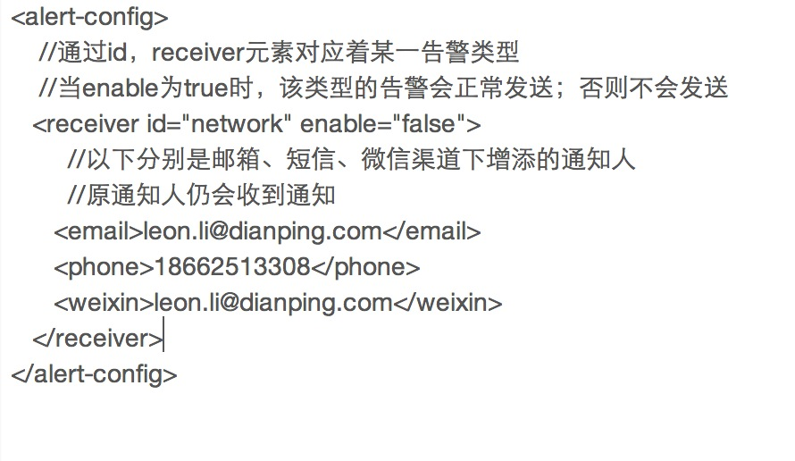配置方法
1).点击导航栏Config－－监控告警配置－－默认告警配置
2).编辑文本框的内容，点击提交
3).当出现"操作成功"提示时表明规则已经生效
1. 业务监控接入
强调两个名词，业务监控以及业务分析
a).业务分析，产品线有很多指标，来确定产品是否能满足用户需求，这部分DW在负责。
b).业务监控，它关注于最重要的业务指标，业务监控目的是快速发现业务是否存在问题，一旦出现问题，这类问题对于业务的影响有多大。
c).业务监控和业务分析有部分的交叉，业务监控数据可能是不准确的，比如销售额，他仅仅用于监控，用于发现业务是否正常。建议产品线的核心指标不超过6个。
问题一：我应该怎么定义我的业务指标，什么是合适的业务指标？
1、业务监控，它关注于最重要的业务指标，目的在于出现线上故障，快速发现哪些业务造成影响，以及影响面有多大，它关注实时性以及告警的准确性。
2、业务监控目的监控线上业务健康状况，一般一个产品线的核心业务指标不超过6个，如果指标过多，会造成监控团队压力大，也会陷入指标误区。
比如团购，关键指标是：订单创建数量，交易数量，验券数量。
比如CAT，关键指标是：服务器处理消息数，消息丢失数目。
3、一些定义错误的业务指标，比如XXX接口失败，这其实是一个异常指标，当他大量出现时候，其实XXX正常指标肯定是下降。比如XXX响应时间，这是一个性能指标，不是业务指标，当访问量出问题（比如CDN挂了），响应时间还是正常。
4、正确的业务指标：XXX访问量，访问量作为指标相对基线固定，告警也比较明确。
问题二：当我一个业务指标出了问题，比如交易数量，我怎么知道哪里出了问题？
答：有些业务指标需要做第二层拆解，才能发现具体的问题点，比如交易渠道有三种，支付宝、银联、微信。业务需要对于不同渠道进行监控埋点。
但不一定所有的问题都能从业务上找到，有的可能是应用问题，比如应用的异常，有的可能是系统的问题，比如磁盘满了。
第一步:确定业务指标
1).每个指标都有一个String作为它的唯一KEY，这个KEY在整个产品线中，不能重复。产品线的配置参考第三步。
比如团购业务中，有两个核心指标，一个订单数量，一个是支付数量
对这两个指标定义两个唯一的String，OrderCount 和 PayCount
KEY仅仅包括字母、数字，不能包含特殊字符，比如引号，冒号等。建议用PayCount这类命名方式。
第二步:业务代码埋点
Metric一共有三个API，分别用来记录次数、平均、总和，统一粒度为一分钟
1.Java API调用方式
1).logMetricForCount用于记录一个指标值出现的次数
2).logMetricForDuration用于记录一个指标出现的平均值
3).logMetricForSum用于记录一个指标出现的总和
如果代码对于调用的API过于频繁，比如一天几千万或者上亿次，为了减少服务端压力，请考虑每10次，100次打一次点（取决你的项目的统计精度）。
具体方法就是在内存中计数， if(count%10==0) { logMetricForCount("key",10) }
4).OrderCount，PayCount记录次数选用logMetricForCount这个API
5).集成代码可能是如下所示，下面描述了综合使用transction，event，metric这几个API，但这些指标都是独立的，可以单独使用，主要看业务场景。 如果仅仅是记录一个业务指标，只需要单独使用一个metric即可。
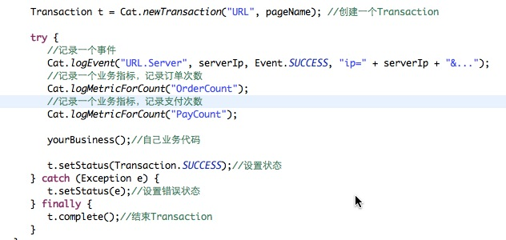2.HTTP API调用方式
接口调用请求说明
http请求方式: GET（请使用http协议） http:/...dianpingoa.com../r/monitor?
参数说明
| 参数 | 说明 |
|---|---|
| group | 监控组唯一ID名称，必需，仅仅包括字母、数字，不能包含特殊字符，比如引号，冒号等。建议TuanGou这类命名方式 |
| domain | 应用唯一ID名称，必需，仅仅包括字母、数字，不能包含特殊字符，比如引号，冒号等。建议用TuanGouWeb这类命名方式 |
| key | 监控业务唯一ID名称，必需，仅仅包括字母、数字，不能包含特殊字符，比如引号，冒号等。建议用PayCount这类命名方式 |
| timestamp | 时间戳,必需，仅仅为数字。如果缺失，选取服务器当前时间 |
| op | sum，avg，count[默认] |
| count | op=count时所需，默认为1 |
| sum | op=sum时所需，默认为0 |
| avg | op=avg时所需，默认为0 |
1).op = count时，用于记录一个指标值出现的次数
http:/...dianpingoa.com../r/monitor?timestamp=1404815988&group=myGroup&domain=myApp&key=myKey&op=count
2).op = avg时，用于记录一个指标出现的平均值
http:/...dianpingoa.com../r/monitor?timestamp=1404815988&group=myGroup&domain=myApp&key=myKey&op=avg&avg=500
3).op = sum时，用于记录一个指标出现的总和
http:/...dianpingoa.com../r/monitor?timestamp=1404815988&group=myGroup&domain=myApp&key=myKey&op=sum&sum=500
4).op = batch时，用于批量提交指标
http:/...dianpingoa.com../r/monitor?op=batch batch= groupTABdomainTABkeyTABtypeTABtimeTABvalueENTER groupTABdomainTABkeyTABtypeTABtimeTABvalueENTER
返回说明
{"statusCode":"-1","errorMsg":"Unknown [ domain,group,key ] name!"} ——> 失败 [必需参数缺失] {"statusCode":"0"} ——> 成功
第三步:图形展示以及告警配置
当程序埋点好，后端的Metric指标的数据都是自动插入到CAT数据库中，不需要用户进行新建业务指标，用户直接修改即可。
此时已经能展示基本的业务监控曲线，如果需要一些其他的配置，比如业务监控图形顺序，展示标题等。
url : 链接
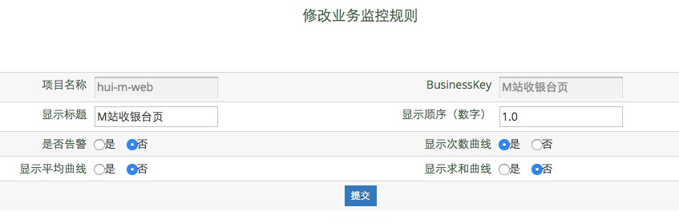自定义metric配置 配置链接
支持自定义metric，自定义metric指对多个打点得到的指标进行四则运算，得到一个新的metric。
配置方法：
输入domain，查询 -> 点击新增，进入配置页面 -> 填写自定义metric的信息，在规则配置栏中填写四则运算规则 -> 配置完成后，即可在对应domain的报表中看到该metric的报表。
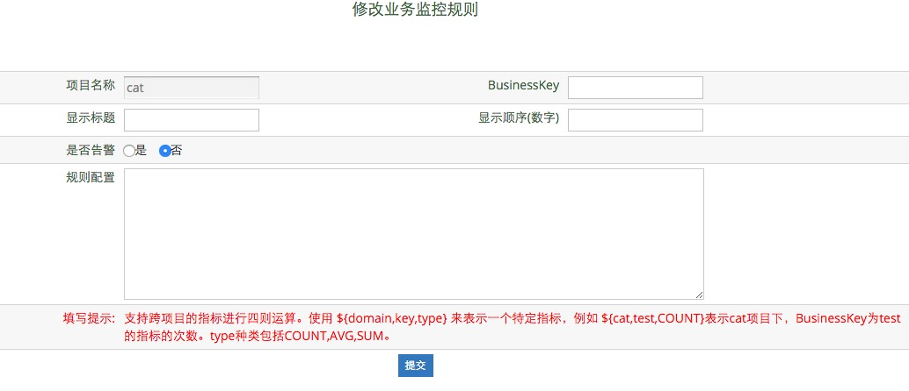第四步:配置公司级别业务大盘【运维配置】
业务大盘将各个产品线重要的业务指标进行汇总，统一展示在一个监控大盘中。
url : 标签配置
2. 业务告警
业务告警是对项目业务指标的监控。
监控规则配置
1).业务告警的监控规则是以项目为单位的。
2).点击configs－－应用监控配置—— ——业务监控配置，进入告警配置页面。
3).查找要配置的应用，点击需要配置的监控项下的告警按钮。
4).按照overall页面中的介绍对规则进行配置并提交，如果提示操作成功，则表示规则已经生效。
告警策略配置
告警信息默认会发送给该项目在cmdb中配置的联系人。
1).点击导航栏Config－－监控告警配置－－告警类型设置
2).编辑id为business的type元素
如需更改默认策略，请编辑id为default的group元素
如需增加新的产品线策略，请添加新的group元素，id为产品线名称
对group下的level元素进行编辑
3).当出现"操作成功"提示时表明策略已经生效
对所有应用的Transaction进行监控，通过对响应时间的判断选择进行警告的发送。
1.响应时间告警
a） 监控对象：一个transaction或者某个类型下所有transaction在一分钟内的平均响应时间
b） 告警规则：根据已设定的一分钟内平均响应时间的阈值，对监控对象进行选择性告警
c） 告警周期：一分钟
2. 响应时间阈值配置
| 参数 | 说明 |
|---|---|
| 域名 | 项目组名称，必需 |
| Type | Transaction类型，必需，某一类transaction的组别 |
| Name | Transaction名称，非必需，默认为All。当为All时，监控目标位为当前Type下所有transaction在一分钟内的平均响应时间；当为具体一个name时，监控某该transaction在一分钟内的平均响应时间。 |
| 告警阈值 | 目前只有waring级别告警，必需，当平均响应时间数超过该阈值，做warning状态设置，做相应告警。（单位：毫秒） |
3. 配置示例说明
A) 配置一览表
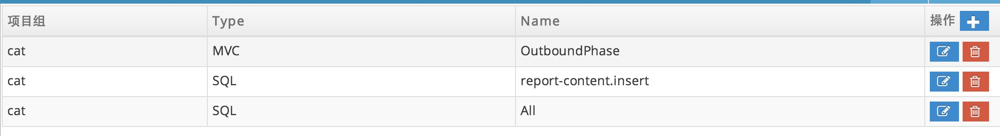B) 配置告警规则
（1）告警名自定义，方便区分告警项。可对响应时间进行监控。
（2）多个监控规则构成了告警的主体，分别对不同时间段进行配置，以方便准确地进行告警。
（3）监控规则诠释着某个时间段内如何进行告警，由任意多个监控条件组成。任何一条监控条件触发都会引起监控规则触发，从而告警。
（4）监控条件诠释着什么条件会触发监控规则，由任意多个监控子条件组成。当所有子条件同时被触发时，才会触发该监控规则。
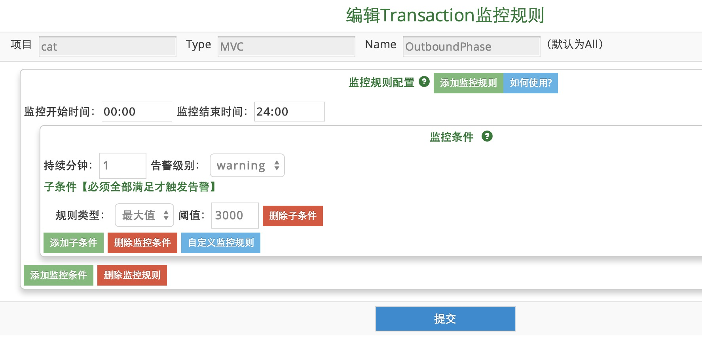1. 网络监控总述
分为三大监控内容
a).核心拓扑，针对公司当前核心网络的实时监控，包括南汇、呼玛机房的路由器及交换机等设备之间的进出流量。
b).网络监控，关注于最重要的业务指标，网络监控目的是快速发现网络是否存在问题，一旦出现问题，这类问题对于网络的影响有多大。
c).网络监控汇总，将各个不同的网络指标进行汇总，以方便用户进行网络各项指标的横纵向对比。
1. 核心拓扑界面
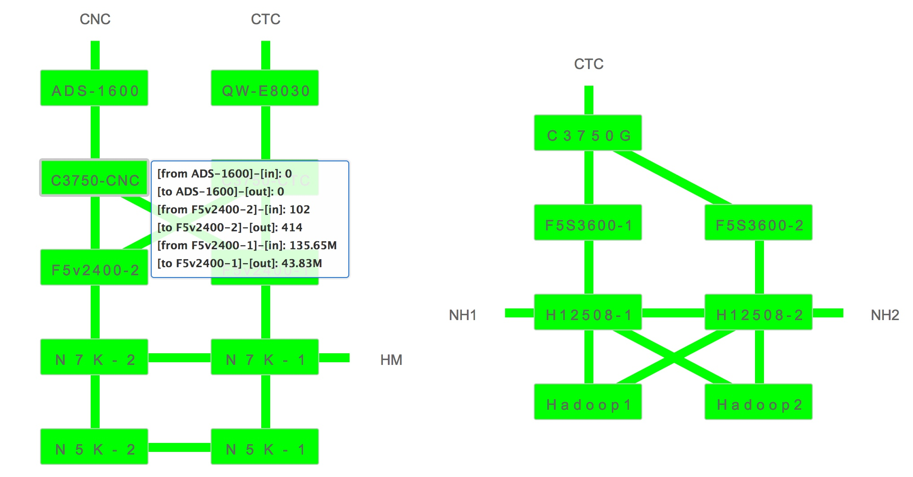CTC:电信 CNC:网通 HM:呼玛 NH1:南汇 NH2:南汇
2. 网络监控界面
针对每个端口的进出流量进行汇总分析对比
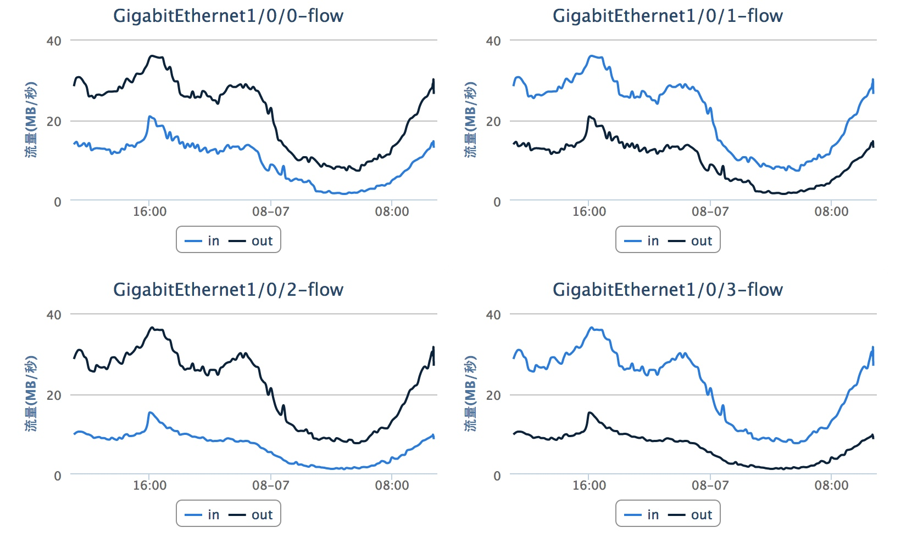(1) 关于网络监控的监控指标的确定以及产品线配置请参考业务监控文档
(2) 对于网络监控中的指标选取及Key格式规定
key = {组名} -{关键字}
a) 对于需要聚合在一个图表中作对比的所有指标，key中的组名必须完全相同，
key=
key=
b) 关键字与组名之间用“
c) 不同的组名之间
(3) 对于网络的监控代码埋点，仅支持业务监控代码埋点中的HTTP API调用方式。
注意：url中项目组名字(group)必须以"switch-"或"f5-"作为开头
(4) 对于需要在网络监控显示的指标，需对产品线做显示到网络大盘配置，如下图
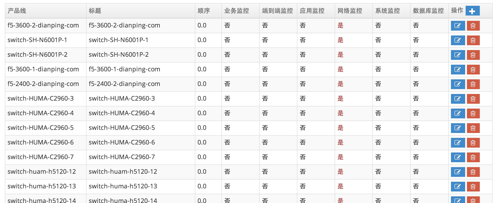2. 网络告警
网络告警是对网络设备运行状态的监控。通过对流量、接口丢包错包数目、CPU使用率等参数的监控，可以了解网络设备的运行状态。
如需了解如何查看核心拓扑界面、查看实时数据等信息，请点击 侧边栏－－网络监控。
监控规则配置
网络告警配置在通用规则模型的基础上增加了productText以及metricItemText。网络监控规则模型如下：
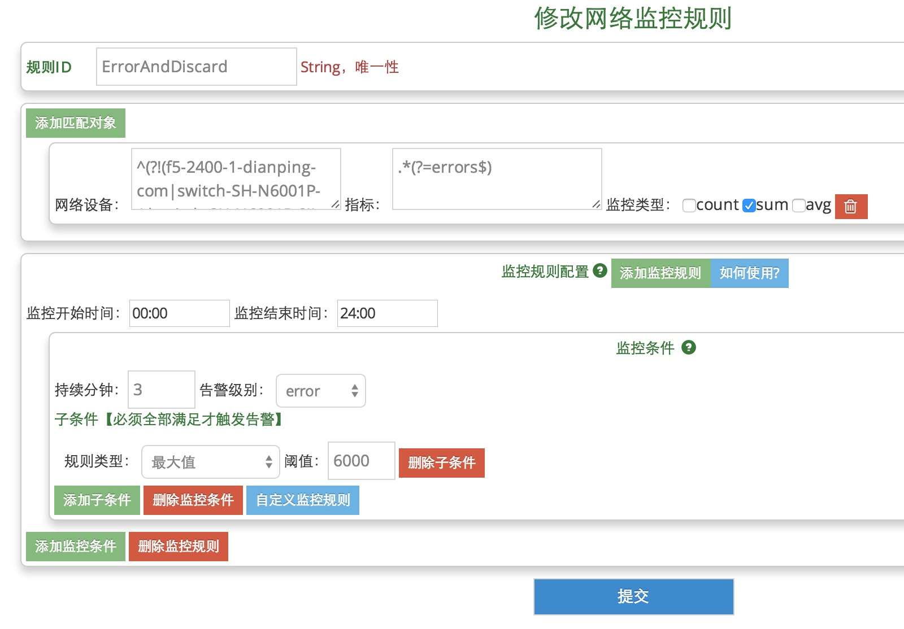1).点击config－－网络监控配置－－网络告警配置，进入网络规则配置页面。
2).按照overall页面以及上图中的介绍对规则进行配置并提交，如果提示操作成功，则表示规则已经生效。
告警策略配置
1).点击导航栏Config－－监控告警配置－－告警类型设置
2).编辑id为network的type元素
如需更改默认策略，请编辑id为default的group元素
如需增加新的产品线策略，请添加新的group元素，id为产品线名称
对group下的level元素进行编辑
3).当出现"操作成功"提示时表明策略已经生效
系统告警
系统告警是对服务器运行状态的监控。通过对CPU、内存、硬盘等参数的监控，可以了解服务器的运行状态。
目前paas平台上的服务器已采用Cat进行系统监控。其它服务器暂时继续使用zabbix进行系统监控
监控规则配置
系统告警配置在通用规则模型的基础上增加了productText以及metricItemText。系统监控规则模型如下：
1).点击 配置－－监控告警配置－－系统告警配置，进入系统规则配置页面。
2).按照overall页面以及上图中的介绍对规则进行配置并提交，如果提示操作成功，则表示规则已经生效。
由于系统监控规则一般即为所有服务器的通用监控规则，一般不设置productText属性。
告警策略配置
1).点击导航栏 配置－－监控告警配置－－告警类型设置
2).编辑id为system的type元素
如需更改默认策略，请编辑id为default的group元素
如需增加新的产品线策略，请添加新的group元素，id为产品线名称
对group下的level元素进行编辑
3).当出现"操作成功"提示时表明策略已经生效
对所有应用异常进行监控，通过对异常次数的判断选择进行警告的发送，并统计出异常警告报表。
1. 异常阈值配置
| 参数 | 说明 |
|---|---|
| 域名 | 项目组名称，必需，当设置为“Default”时，适用于所有项目组。 |
| 异常名称 | 异常名称，必需，当设置为“Total”时，是针对当前项目组所有异常总数阈值进行设置；当设置为特定异常名称时，针对当前项目组所有同名的异常阈值进行设定 |
| Warning阈值 | 认定为Warning级别的阈值，必需，当异常数小于该阈值时，不做任何警报；当超过该阈值，小于Error阈值时，做Warning状态设置，做相应警warning告警 |
| Error阈值 | 认定为Error级别的阈值，必需，当异常数超过该阈值，做Error状态设置，做相应警Error告警 |
2. 异常过滤配置
对于不想进行异常告警的异常，可以在异常过滤配置里进行设置
| 参数 | 说明 |
|---|---|
| 域名 | 项目组名称，必需，当设置为“Default”时，适用于所有项目组。 |
| 异常名称 | 异常名称，必需，当设置为特定异常名称时，过滤当前项目组所有同名的异常 |
3. 异常告警组邮件配置
针对每个项目组，可以进行组邮件和联系人的配置，CAT将根据此配置进行邮件的发送。
注意：不设置组邮件的话，您将错过第一时间知晓异常的机会！
4. 异常告警
(1) 实时监测当前的应用异常情况，对于超过阈值设置的异常，Warning级别的仅发送邮件，Error级别的同时发送邮件和短信。
(2) 监测异常并发送警报的周期为：一分钟
(3) 异常判定规则
5. 异常告警统计报表
a) 将异常告警的情况进行统计，按Error警告的次数从大到小进行排序，呈现出错警告及排行的详细情况。
b) 点击“Detail”查看详细异常情况
心跳告警
心跳告警是对服务器当前状态的监控，如监控系统负载、GC数量等信息。
监控规则配置
心跳告警是由两级匹配的。首先匹配项目，然后按照指标匹配。指标由下拉框选择。
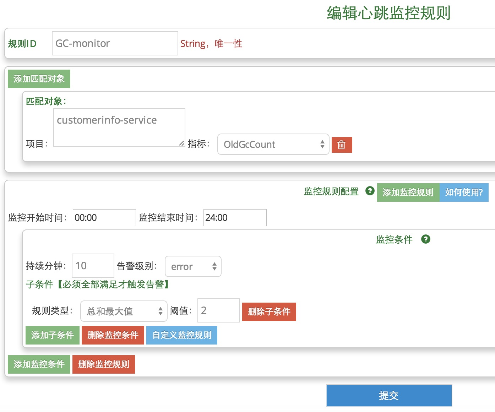1).点击config－－应用监控配置－－心跳告警配置，进入心跳规则配置页面。
2).按照overall页面以及上图中的介绍对规则进行配置并提交，如果提示操作成功，则表示规则已经生效。
告警策略配置
1).点击导航栏 配置－－监控告警配置－－告警类型设置
2).编辑id为heartbeat的type元素
如需更改默认策略，请编辑id为default的group元素
如需增加新的项目策略，请添加新的group元素，id为项目名称
对group下的level元素进行编辑
3).当出现"操作成功"提示时表明策略已经生效
数据库告警
数据库告警是对数据库运行状态的监控。
监控规则配置
数据库告警配置在通用规则模型的基础上增加了productText以及metricItemText。数据库监控规则模型如下：
1).点击 配置－－监控告警配置－－数据库告警配置，进入数据库规则配置页面。
2).按照overall页面以及上图中的介绍对规则进行配置并提交，如果提示操作成功，则表示规则已经生效。
告警策略配置
1).点击导航栏 配置－－监控告警配置－－告警类型设置
2).编辑id为database的type元素
如需更改默认策略，请编辑id为default的group元素
如需增加新的产品线策略，请添加新的group元素，id为产品线名称
对group下的level元素进行编辑
3).当出现"操作成功"提示时表明策略已经生效
ping告警
ping告警是根据指定的网址发送HTTP请求，当返回码不为200时发送警告。
ping告警是一种HeartBeat检测，可以监控一个web app的可用性和网络状况
监控规则配置
为了满足ping监控的需求，ping监控规则没有采用通用的规则模型。其规则模型如下：
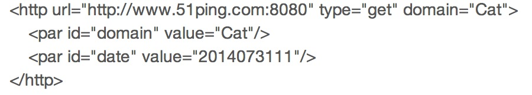具体配置如下
[url]：监控的网址
[type]：get 或 post
[domain]：依赖于该ping的项目名，会向该项目组联系人发ping告警
[par]：请求中包含的参数，id为参数名称，value为参数值
以上参数名均为小写。监控周期为一分钟。
规则更新
1).点击config－－应用监控配置－－ping监控配置，进入ping监控规则配置页面。
2).按照上述介绍对规则进行配置并提交，如果提示操作成功，则表示规则已经生效。
告警策略配置
1).点击导航栏Config－－监控告警配置－－告警类型设置
2).编辑id为thirdParty的type元素
如需更改默认策略，请编辑id为default的group元素
如需增加新的产品线策略，请添加新的group元素，id为项目名称，与规则配置中的domain属性相对应
对group下的level元素进行编辑
3).当出现"操作成功"提示时表明策略已经生效